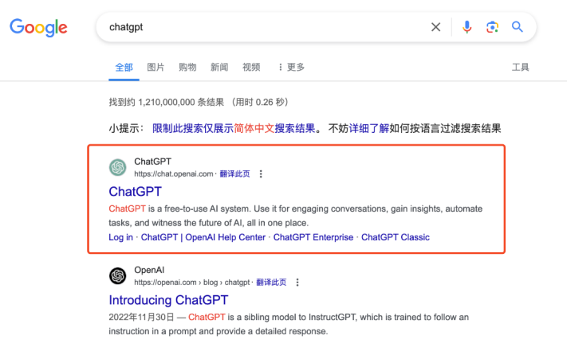
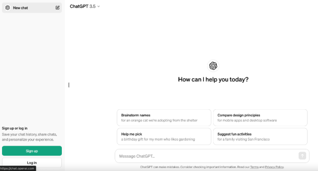
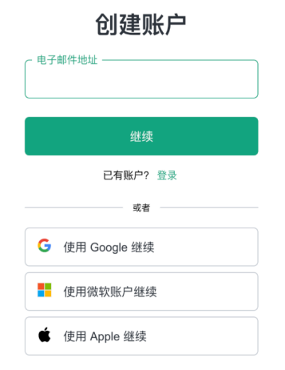
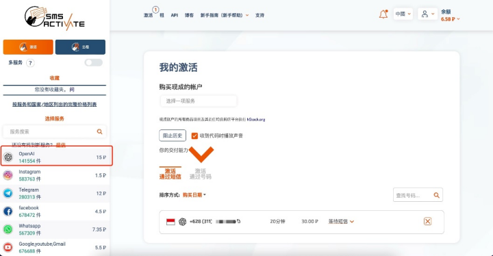
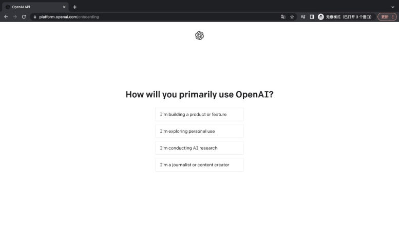
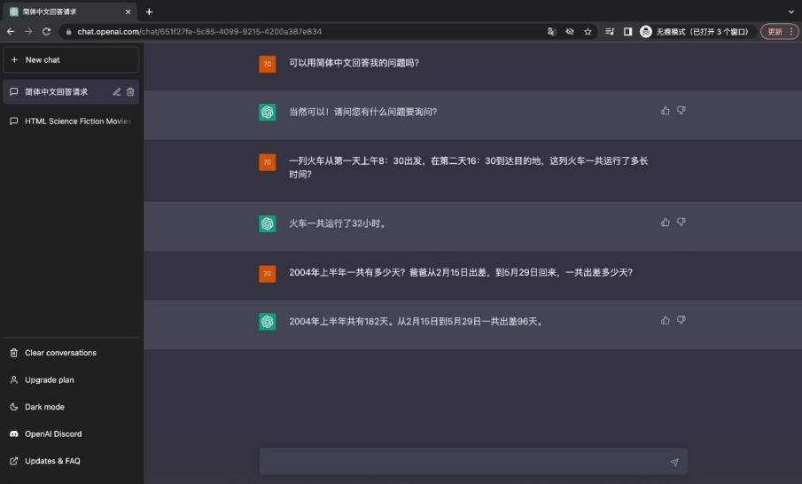

赛盾VPN
主页

用户登录
退出登录


问题分类
赛盾VPN使用教程
苹果安装常见问题
会员购买问题
热门应用教程
赛盾，让服务更有温度
联系在线客服
如何下载赛盾VPN
这里说明在iOS、Android、Windows系统中如何获取到最新版本的赛盾VPN
赛盾VPN目前提供 iOS（iPhone/iPad/MAC）、Android（安卓手机）、Windows（PC、Surface）、这几种平台的 VPN 软件。
您可以在要使用赛盾VPN的设备中打开我们的官方网站直接下载。官网内滑到最下面有您需要的下载方式。
赛盾VPN 官网链接：http://www.tsselee.com 官网直达入口
注：Android 和 PC 强烈推荐使用 Chrome 浏览器进行安装使用，避免因浏览器原因造成无法安装使用现象的发生。
VPN 软件非常强调安全性和抗干扰，我们大概 1 - 2 周会更新版本，非常建议您始终保持使用最新版本的 赛盾VPN。
您也可以发送邮件给 saidunyouxiang@gmail.com 索要最新版本，客户服务人员会给您一个直接的下载位置。
注：若您在下载和使用过程中有任何问题，您随时可以发送邮件给saidunyouxiang@gmail.com，将由专业的客户服务人员帮助您获取到最新版本的软件。
苹果版本赛盾 VPN 更新遇到问题怎么办？
如果您在更新赛盾VPN 版本的时候遇到问题，请查看下方解决方案：
VPN 会经常被 GFW 封锁导致出现无法使用的情况，为保证咱们能时时连接，我们会定期在软件内加入新的防封杀技术，强烈建议您使用赛盾VPN最新版本；
苹果商店软件更新操作只能是同一Apple ID 下载的软件，如果不是就会出现各种各样的错误（更新只要出现问题，请按照下面方式解决即可）
解决办法：
卸载旧版本赛盾VPN 软件（不必担心，时长会保留到最新下载软件中）；
Appstore 登陆非中国大陆 Apple ID
需要注意：
一定要卸载旧版本后点击下载才可以哦！
苹果版本赛盾VPN 不好用怎么办？
通过一些简单设置来提升赛盾 VPN 的使用体验，具体如下：
一. iOS 连接经常断开问题
缘由：iOS 设备本身会存在 15M NE内存限制，连接 VPN 使用时，当上限超过 15M 后就会出现 VPN 断开连接情况。
解决办法：
（1） 建议升级 iOS 系统 到 iOS 15，这样内存限制会由 15M → 50M
（2）清理后台不使用的程序，若手机中有照片自动同步 or 软件商店的自动更新这些设置也关闭一下
PS：iOS 15M NE内存问题是 Apple 自身限制，可以在谷歌浏览器搜索 iOS 15M NE内存限制了解更多。
二. 效果不好/图片刷不出来/消息无法显示
缘由：当前世界各地的 5G 网络/信号都会存在不稳定的情况，这种情况直接导致设备在短时间内多次切换网络，从而出现无法加载所需观看内容的情况，使用感极差。
解决办法：
1. 关闭 Iphone or Ipad 的 5G 功能（使用 Wi-Fi 时无需此项设置）
2.操作步骤：系统设置→蜂窝网络→蜂窝数据选项→语音与数据→4G
三. iOS 连接时界面卡住
解决办法：
系统设置 → VPN 将后面的按钮关闭 or 重新打开即可
如何恢复 赛盾ID 变化导致丢失的购买时间
您在电脑或者手机中卸载重装赛盾VPN并不会引起设备 ID 的变化，但是若您刷机或者重做操作系统，那么设备 ID 会发生改变。若您之前未注册账户，那么您以前购买的时间可能会消失。
请您放心，通过这个操作说明的流程，我们将为您快速的找回来
找回账户我们需要如下的信息：
您当前的新设备 ID
过去您的充值记录详情截图
若您能够提供原设备 ID 会加快我们处理的过程
若您无法提供这个充值记录详情截图，我们将无法受理您的要求，因为我们无法在海量的赛盾VPN 支付记录中找到您指定金额的记录
即使能够找到也无法证明这笔支付是您产生的。若我们没有证据而冒然处理，这将会有严重的安全和法律风险。
ChatGPT-保姆级注册教程
ChatGPT 在世界掀起一阵 AI 热潮，快连编编将为小夥伴们带来一系列的使用攻略，
请务必下载赛盾 VPN ，才能使用或注册 ChatGPT 喔，让我们出发探索 AI 世界吧！
下载地址 ：http://www.aentos.com
简介：
ChatGPT 是 OpenAI 公司开发的一种大型语言模型，可用于问答、对话生成、文本生成等多种任务。是全球最炙手可热的 AI 工具之一。目前有 GPT-3.5 和 GPT-4 两个版本。
GPT-3.5：无需注册，访问 ChatGPT 官网（ https://chat.openai.com/ ），即可立即体验
GPT-4 ：需注册账户后付费使用
PS：若有 GPT-4 的使用需求，大家可以查看后面的内容进行注册
目录
-------------
1.注册 OpenAI 流程
使用极速模式 + 香港 / 新加坡
使用 Chrome / Edge 浏览器无痕模式访问 ChatGPT 官网 https://chat.openai.com/
使用接码平台接收手机验证码
2.详细图文步骤
浏览器搜索 ChatGPT ，点击进入官网

进入 OpenAI 官网后，可以直接使用 GPT-3.5版本，点击 Sign up 即可进入注册页面：

输入您的邮箱地址，点击 Continue ，然后设置密码，再设置用户名，之后会进入到手机号验证的界面

PS：建议您可以使用第三方平台账户进行登陆，可以直接省去手机号验证的环节
若需要手机号验证，推荐使用接码平台，实测印度尼西亚 / 马来西亚号码可用
温馨提醒：注册接码平台后需充值 1 美元，平台接收验证码可能会有延迟，请自行测试。接码平台：https://sms-activate.org/

输入验证码后，会显示一个简单的问卷调查，随便选一个即可

访问 ChatGPT官网，即可与 ChatGPT 进行沟通https://chatgpt.com/

此篇图片均取自网络，如有侵权请联系：saidunyouxiang@gmail.com
Tiktok-海外抖音保姆级注册教程
若您不知如何访问海外抖音，请查看本篇教程，享受极致丝滑的畅刷体验
一、连接赛盾 VPN 选全局模式 + 国家地区线路
注：香港、印度、加拿大三个区域因 Tiktok 停止运营，所以连接上述三个区域依旧不能观看
二、设置手机
由于各个平台限制不同，都需要进行较为繁琐的设置，您可以在谷歌浏览器直接搜索 Tiktok 即可观看，若您希望于 App 中使用 Tiktok 可以根据以下对应平台的步骤进行设置。
安卓设置
拔出手机Sim卡（平板设备可忽略） ;
修改系统语言与地区（建议语言和国家一致，英国：英文；日本：日语） ;
更改语言： 安卓设备：手机设置→ 语言和时区→ 改成想访问内容的国家和语言 ;
修改系统时区（建议时区和国家一致，英国：英文；日本：日语） ;
更改时区： 安卓 → 设置 → 系统设置 → 日期和时间 → 时区 ;
关闭WLAN 和蓝牙的自动扫描功能，和系统的定位功能 ;
打开赛盾VPN → 变更国家地区界面 → 全局模式 + 台湾、日本、美国等区域连接 ;
完成以上设置后重启下设备即可
iOS设备
拔出手机 Sim 卡（ iOS 16.4 以上系统 及 平板设备 可以忽略 ） ;
更改系统时区： iOS 设置 → 通用 → 语言与地区 → 地区，直接选择要修改的区域即可（ 非 Tiktok 封禁的地区） ;
安装最新版本的 Tiktok
打开快连VPN → 变更国家地区界面 → 选择安全模式 + 台湾、日本、美国等区域连 ;
完成以上设置后，打开 TIktok 就可以正常访问了
若按照以上步骤操作依然无法正常访问，请发送邮件至saidunyouxiang@gmail.com，我们将有专业的服务人员来帮助您解决遇到的问题。
赛盾VPN常见问题： 1. iOS 连接经常断开问题
缘由：iOS 设备本身会存在 15M NE内存限制，连接 VPN 使用时，当上限超过 15M 后就会出现 VPN 断开连接情况。
解决办法：
1. 建议升级 iOS 系统 到 iOS 15，这样内存限制会由 15M → 50M
2.清理后台不使用的程序，若手机中有照片自动同步 or 软件商店的自动更新这些设置也关闭一下
PS：iOS 15M NE内存问题是 Apple 自身限制。
连接成功后还是不能使用TikTok？
注：香港，印度，加拿大三个区域因Tiktok停止运营，所以连接上述三个区域依旧不能观看。
海外抖音访问方式：关闭蓝牙和系统的定位功能，拔出手机Sim卡，在手机通用里面把时区换成美国，语言换成英文，然后重启手机，打开VPN选择美国和全局模式，即可访问海外抖音
图片刷不出来/消息无法显示
缘由：当前世界各地的 5G 网络/信号都会存在不稳定的情况，这种情况直接导致设备在短时间内多次切换网络，从而出现无法加载所需观看内容的情况，使用感极差。
解决办法：
1. 关闭 Iphone or Ipad 的 5G 功能（使用 Wi-Fi 时无需此项设置）
2.操作步骤：系统设置→蜂窝网络→蜂窝数据选项→语音与数据→4G
iOS 16 系统连接提示小问题
PS： iOS 16 系统自己本身各种 BUG
解决办法：
第一步：重启手机；
第二步：手机设置→通用→传输或还原iPhone →还原→还原网络设置；
PS：还原网络之后 Wi-Fi 密码需要重新输入，记得记录一下哦
s
哪个节点速度更快
每个地区的网络状况都不一样，您需要登陆什么地区的网站或者游戏，就选择对应线路（优先选择绿色的延迟较低的线路连接）
赛盾VPN限制流量吗？
赛盾VPN是没有流量限制的，但是请注意若您的设备没有联网，是无法使用任何VPN软件的。